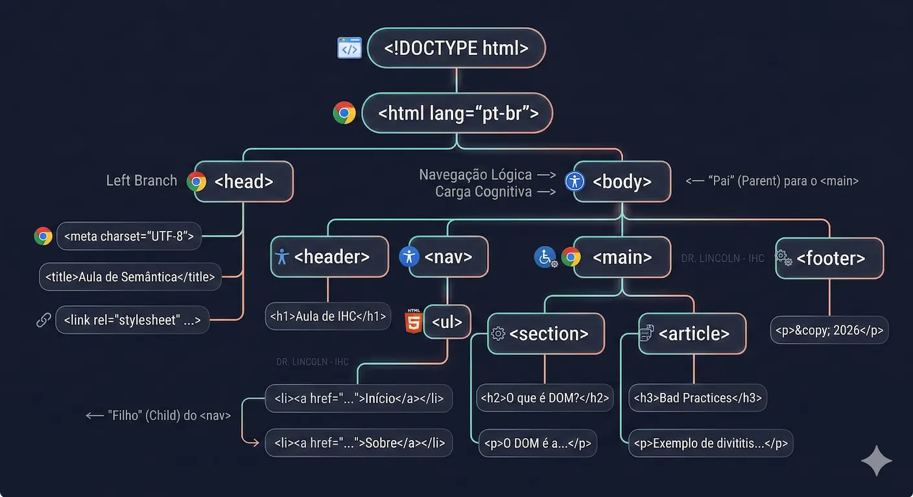

← Voltar ao Portal da Disciplina
Conheça meu trabalho como perito
← Voltar ao Portal da Disciplina
Conheça meu trabalho como perito
← Voltar ao Portal da Disciplina
Conheça meu trabalho como perito
← Voltar ao Portal da Disciplina
Conheça meu trabalho como peritoDisciplina: Usabilidade, desenvolvimento web, mobile e jogos
Data: 04 de Março de 2026
O HTML não é uma linguagem de programação, mas de marcação. Ele define a intenção e a hierarquia do conteúdo.
Ele define a intenção e a hierarquia do conteúdo.
O HTML5 funciona como a fundação de qualquer projeto web, estabelecendo a hierarquia que será interpretada pelos navegadores." — Alves (2019)
Evitar a "divitis". Escolher a peça certa para o propósito certo, assim como na administração se define cargos específicos (Diretor, Analista) em vez de "colaborador genérico".
<nav> em vez de <div>
SEO & Acessibilidade: O Google e leitores de tela não "veem" o design, eles leem o significado. Sem semântica, a interface torna-se uma barreira para a inclusão.
<h1> indica o tópico principal
Alves (2019): A semântica é a fundação que reflete a lógica dos dados.
Kalbach (2009): Estrutura lógica reduz a carga cognitiva do usuário.
Sem Semântica (Visual):
Com Semântica (Significado):
Permite que leitores de tela interpretem a página, removendo barreiras para usuários com deficiência visual (Mota et al., 2023).
Motores de busca como o Google indexam o conteúdo com prioridade, entendendo o que é título e o que é corpo de texto.
Código limpo e legível. Reduz a carga cognitiva do desenvolvedor e analista (Kalbach, 2009).
// Estrutura Semântica Recomendada (Alves, 2019):
Local onde residem os Metadados. São instruções que o usuário não vê, mas que gerenciam como o navegador e os buscadores processam a página.
<meta charset="UTF-8">
Essencial para o Mobile First. Informa ao navegador que a largura do site deve se adaptar à largura da tela do dispositivo (escala 1:1).
name="viewport" content="width=device-width"
Visão Técnica: Sem essas tags, o navegador tentará "adivinhar" a codificação e a escala, resultando em textos ilegíveis ou layouts quebrados em dispositivos móveis.
<article>
Conteúdo autônomo e independente. Pode ser distribuído fora da página (ex: post de blog ou notícia).
<section>
Agrupamento temático. Usada para dividir capítulos, abas ou áreas distintas de um mesmo assunto.
<aside>
Conteúdo tangencial. Sidebar, publicidade ou citações que se relacionam indiretamente ao texto.
<nav>
Bloco de navegação. Deve conter os links principais para o fluxo do usuário no sistema.
"A semântica do HTML é o alicerce para um design de navegação que reduza a carga cognitiva do usuário."
— Kalbach (2009)Veja como as tags discutidas anteriormente se organizam para formar a arquitetura de uma página:
Dica do Perito: Observe que o <article> e a <section> estão contidos dentro do <main>. Essa hierarquia é o que permite ao Google e aos leitores de tela entenderem o que é o "coração" da sua página.
O atributo alt não é apenas para falhas de carregamento. É a voz da imagem para leitores de tela.
A hierarquia de <h1> a <h6> funciona como um mapa para navegação via teclado. Pular níveis quebra a orientação do usuário.
*Referência: Mota et al. (2023)*
A semântica correta reduz a distância de execução: o esforço que o usuário faz para entender como interagir com o sistema. Um botão deve ser <button> para que o sistema assistivo anuncie uma "Ação" e não apenas um "Texto".
Testar se a Hierarquia (Alves, 2019) e a Navegação Lógica (Kalbach, 2009) resistem à ausência do design. É a base da Empatia Técnica para IHC.
1. O Usuário: Fecha os olhos. Depende 100% da semântica para "enxergar" o sistema.
2. O Navegador: Descreve a página apenas lendo as tags (ex: "Aqui é um nav", "Este é o h1").
Visão de Gestão: Para um Analista, não basta o código "funcionar". Ele precisa ser interoperável e inclusivo (Mota et al., 2023). Auditoria reversa é o padrão ouro de qualidade.
Foco: Notícias, <article> e hierarquia de títulos (H1-H6).
Foco: Navegação complexa, <nav> e conteúdos em <aside>.
"Se o código não explica o que a interface mostra, a usabilidade faliu."
Identifique em qual cenário o site auditado pela sua dupla se encaixa. Estes são os Sinais de Maturidade Semântica:
alt descreveu as imagens com precisão.Resultado: Usabilidade plena e SEO otimizado.
<div> genéricas, dificultando a localização.alt deixaram o usuário "no escuro".Resultado: Alta carga cognitiva e exclusão digital.
💡 Conclusão do Analista: Se o seu site caiu no Cenário B, ele falhou nos princípios de Kalbach (2009) e Mota (2023). Como gestores, nosso papel é garantir que a arquitetura do sistema (HTML) suporte a experiência do cliente (UX).
Foco: Arquitetura e Carga Cognitiva
Foco: Acessibilidade Tecnológica
alt.💡 Síntese Técnica: Enquanto Kalbach foca na eficiência da mente humana ao processar a estrutura, Mota foca na capacidade da tecnologia em mediar essa experiência para todos. Como gestores, integramos ambos para garantir Qualidade de Software.
Aproveite para trocar percepções rápidas sobre a auditoria. O que mais surpreendeu a sua dupla no G1 ou UOL?
Segundo Kalbach (2009), pausas são essenciais para consolidar novos modelos mentais de navegação.
Tempo Restante
A semântica do type define qual teclado o sistema operacional abrirá no mobile. Isso reduz o erro e o tempo de preenchimento.
O uso da tag <label> vinculada ao input expande a área de clique, essencial para a ergonomia do dedo humano (Mota et al., 2023).
Em sistemas mobile, o formulário é o ponto de maior carga cognitiva. Utilizar placeholder, required e tipos específicos é uma estratégia de prevenção de erros na fonte, garantindo a integridade dos dados que alimentam o back-end.
<div> para tudo, matando a semântica.<h3> antes do <h1> por causa do tamanho da fonte.alt.Vamos construir agora uma estrutura que respeite os princípios de Kalbach e Mota.
💡 Visão do Analista: Note que no exemplo da esquerda, o estilo visual (tamanho da fonte no span) tenta substituir o significado. No exemplo da direita, a tag <h2> já carrega o significado de "Subtítulo" naturalmente.
Utilize o seu caderno ou um editor de texto para realizar a engenharia reversa do nosso portal da disciplina:
Desenhe a Árvore de Elementos que você imagina que sustenta a página atual. Identifique os "Nós" (Nodes) principais.
Aplique o Glossário do Item 05. O portal utiliza as tags corretas para:
💡 Conexão Acadêmica: Segundo Alves (2019), a árvore DOM deve refletir a hierarquia de importância da informação. Se a árvore for "plana" demais (cheia de divs no mesmo nível), a carga cognitiva para o sistema interpretar a página aumenta.
Imagine o código como uma família ou um organograma. Cada elemento é um "Nó" (ponto de conexão):
<html>. Ele é o "CEO" ou o patriarca que contém tudo.
<body> é pai do <main>).
<li> são filhas da <ul>).
💡 Visão de Gestão: Se a sua árvore tem "galhos" demais sem necessidade (ex: 10 <div> para um único texto), você está criando uma Dívida Técnica e aumentando a carga de processamento do navegador.
Este é o modelo mental que deve guiar a sua análise. Observe a hierarquia dos Nós (Nodes) e como as tags semânticas se ramificam:

Como a redução da Carga Cognitiva (Kalbach, 2009) impacta diretamente no ROI (Retorno sobre Investimento) de um produto digital?
"Um sistema difícil de usar é um sistema caro de manter."
A visão de Mota et al. (2023): A acessibilidade é um "favor" ao usuário ou um requisito técnico de conformidade legal e qualidade?
Após analisarmos a visão de Kalbach (2009) e Mota (2023), consolidamos que o HTML Semântico não é uma escolha estética, mas uma decisão de Engenharia de Qualidade:
Estruturas lógicas reduzem a Carga Cognitiva e o tempo de manutenção, permitindo que o sistema escale sem "dívida técnica".
A Acessibilidade integrada ao DOM garante que o produto alcance 100% dos usuários, cumprindo requisitos legais e éticos.
"Um código que não comunica seu significado às máquinas falha em sua missão de servir aos humanos."
Data: Quinta-feira (05/03)
Data: Próxima Quarta-feira (11/03)
📌 Checklist para Quinta-feira: Revisem os princípios de Kalbach (2009) e tragam o mapeamento da Árvore DOM que iniciamos hoje. A qualidade do seu código no laboratório será reflexo da clareza da sua estrutura mental.
Com base nos princípios de Kalbach e Mota vistos hoje, você sente segurança para estruturar um documento HTML semântico?
Dr. Lincoln, acesse Relatórios > Tempo Real e aplique o filtro:
Event Name = aprendizado_semantica
*Esta coleta de dados permite ajustar a carga cognitiva da aula prática na quinta-feira.*
Seu feedback anônimo é o nosso KPI de Qualidade. Ele alimenta o dashboard de satisfação em tempo real para ajustes na próxima aula.
Módulo: HTML5 & Semântica | Referência: 04/03/2026